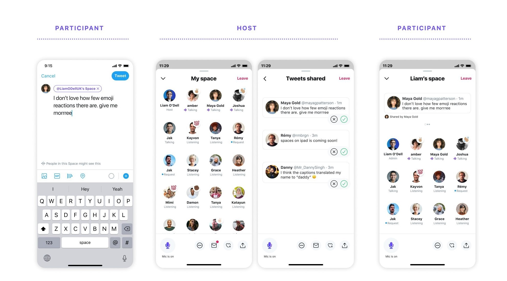
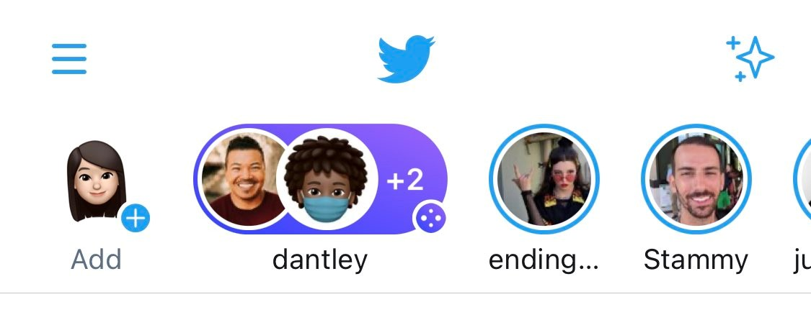
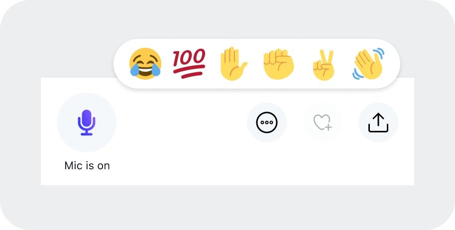

It is being seen as a competitor of Clubhouse – the popular voice-based social media. Spaces, however, has got an edge
over Clubhouse. While Clubhouse is available only for iOS, Twitter Spaces is being tested on Android as well as iOS.
So, can Spaces be the Clubhouse for Android everyone has been waiting for?
Well, read this article to find out. In this article, I’m detailing the features of the Twitter Spaces app, how it
works, and if it’s any better than Clubhouse.
Let’s dive in.
What is Twitter Spaces?
Spaces are audio-based chatrooms to interact with your followers, your Twitter community. It is a feature being built
within the Twitter app.
In Spaces, you can gather a group of users for live audio conversations. You can invite speakers, share your tweets and
use emoji gestures to keep the conversation on. Spaces are public, so all your followers can join and listen to your
conversations.
Similarly, you can enter other public Spaces and listen to the live relay.

Twitter Spaces beta is available to a small group. As of February 2020, only around 4,000 beta testers have access to
Spaces, Tom Warren (Senior Editor at The Verge) reported.
And here’s how to use this Clubhouse alternative for Android and iOS:
How to create a Space on Twitter?
You have two ways to begin a Twitter Space on the app:
Long press the Compose button and tap on the Spaces icon
or
Tap on your profile image in the Fleets section, and then on the Spaces icon
Now, you can invite up to 10 people to speak. Then, choose who can join your Space with speaking privileges. The options
are – Everyone, People you follow, or Only people you invite to speak.
When you're ready:
Tap on the “Start your Space” button
Toggle “Allow mic access” to On
Toggle “Share transcriptions” to On (if you want)
And that’s all you need to create a Space on Twitter.

Spaces has all the features which make it similar to the Clubhouse iOS app. You can invite people you want, check who
all are part of the room, and see who is speaking. And of course, you can join other Spaces and be a part of the
conversation.
Some other features of Spaces beta are:
Spaces are public and they appear in the Fleets section
Anyone can join as a listener
Twitter Spaces have public links
Participants can share links for others to join
Creators can remove, block and report participants
Creators can control who can speak in their Space
Up to 10 people can speak in a Twitter Space at the same time
There is no limit on the number of listeners
Accounts with protected tweets can’t create Spaces
Only the person who created a Space can end it
Once a Space ends, Twitter keeps the recordings for 30 days to review for violations. You can download the data of your
Space within that time. Also, if the Space had transcriptions turned on, speakers can download a copy of what they said.
And if a Space violates any rule, the data is kept for 90 more days, so people can appeal.
Some other features being tested on both Twitter Spaces android and iOS are the ability to share tweets in Spaces,
automated captions and emoji reactions. So, if you're waiting for a version of Clubhouse for Android, Twitter Spaces
download might be a better alternative.

Twitter Spaces vs Clubhouse – How are they different?
Some major differences between Twitter Spaces and Clubhouse are:
Twitter Spaces is being tested for Android as well as iOS. But the Clubhouse app is available only on iOS.
Unlike Clubhouse, a Twitter Spaces invite is not needed. Its beta version is being gradually rolled to users.
Twitter Spaces doesn’t have any limit on the number of people who can join a room. Clubhouse, as of now, has a
limit of 5000 people per room.
Spaces allows a listener to give feedback to the speakers using emojis. Clubhouse doesn’t have that feature.
On Twitter Spaces, you can post and discuss tweets. In Clubhouse, you can't share pictures, videos or text.
Twitter Spaces will have live captions, so listeners can also read what is being said. But Clubhouse doesn’t have
this feature.
Conclusion
The concept behind Twitter Spaces and Clubhouse is the same. Both are audio-only chat rooms. So, unless Clubhouse comes
out with an Android app soon, Twitter Spaces might be the Clubhouse for Android.
And Twitter Spaces has a good chance of replacing Clubhouse even on iOS.
Spaces feature is built into the Twitter platform. So, users will get the benefit of their existing online presence. And
with additional features like data download, emoji reactions and live captions, Spaces might be more user-friendly than
Clubhouse.


 +91 77366 95526
+91 77366 95526
 info@blusteak.com
info@blusteak.com